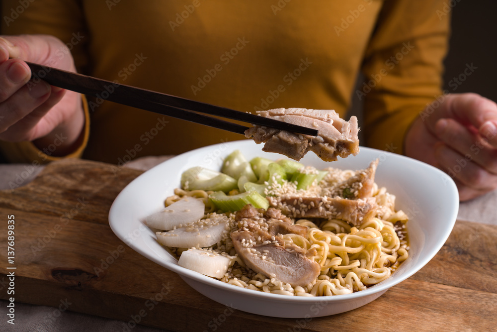
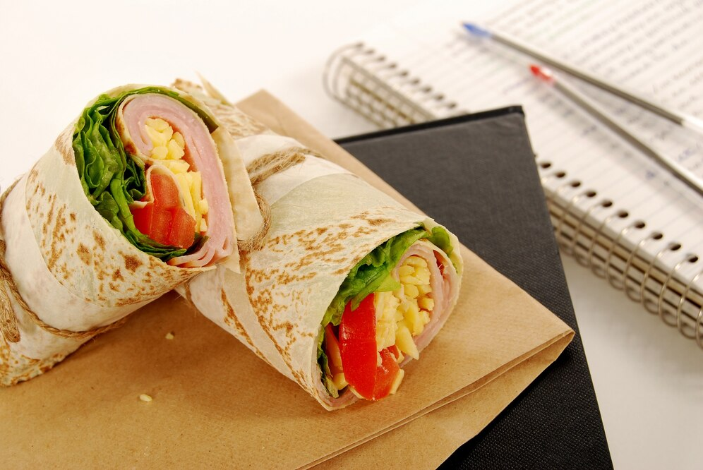
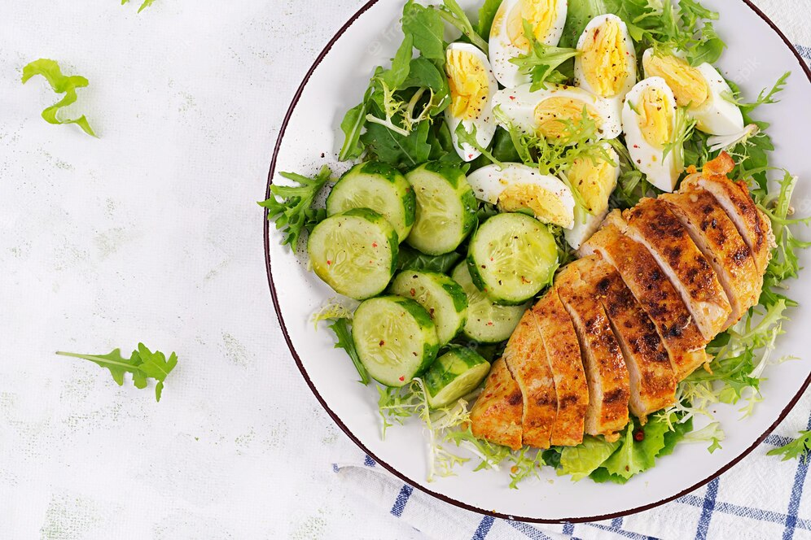

Records of people adding other ingredients to bread to make it more flavorful can be found throughout ancient history. In the 6th century BC, the Persian soldiers of the Achaemenid Empire during the rule of Darius the Great baked flatbreads with cheese and dates on top of their battle shields[22][23] and the ancient Greeks supplemented their bread with oils, herbs, and cheese.[24][25] An early reference to a pizza-like food occurs in the Aeneid, when Celaeno, queen of the Harpies, foretells that the Trojans would not find peace until they are forced by hunger to eat their tables (Book III). In Book VII, Aeneas and his men are served a meal that includes round cakes (like pita bread) topped with cooked vegetables. When they eat the bread, they realize that these are the "tables" prophesied by Celaeno.[26] In 2023, archeologists discovered a fresco in Pompeii appearing to depict a pizza-like dish among other foodstuffs and staples on a silver platter. Italy's culture minister said it "may be a distant ancestor of the modern dish".[27][28] The first mention of the word "pizza" comes from a notarial document written in Latin and dating to May 997 AD from Gaeta, demanding a payment of "twelve pizzas, a pork shoulder, and a pork kidney on Christmas Day, and 12 pizzas and a couple of chickens on Easter Day."[29]
Ramen
Ramen became popular in China where it is known as rìshì lāmiàn ( lit. 'Japanese-style lamian'). Restaurant chains serve ramen alongside distinctly Japanese dishes, such as tempura and yakitori. Interestingly, in Japan, these dishes are not traditionally served with ramen, but gyoza, kara-age and others from Japanese Chinese cuisine.
In Korea, ramen is called ramyeon (라면 / 拉麵). There are different varieties, such as kimchi-flavored ramyeon. While usually served with egg or vegetables such as carrots and scallions, some restaurants serve variations of ramyeon containing additional ingredients such as dumplings, tteok, or cheese as toppings.[44]
Outside of Asia, particularly in areas with a large demand for Asian cuisine, there are restaurants specializing in Japanese-style foods such as ramen noodles. For example, Wagamama, a UK-based restaurant chain serving pan-Asian food, serves a ramen noodle soup and in the United States and Canada, Jinya Ramen Bar serves tonkotsu ramen.

Shawrma
Although the roasting of meat on horizontal spits has an ancient history, the shawarma technique—grilling a vertical stack of meat slices and cutting it off as it cooks—first appeared in the 19th-century Ottoman Empire, in what is now Turkey, in the form of doner kebab, [1][11][12] which both the Greek gyros and shawarma are derived from.[1][2][13] Shawarma, in turn, led to the development during the early 20th century of the contemporary Mexican dish tacos al pastor when it was brought there by Lebanese immigrants.[2][14]

Noodles
The earliest written record of noodles is found in a book dated to the Eastern Han period (25–220 CE).[1] Noodles made from wheat dough became a prominent food for the people of the Han dynasty.[3] The oldest evidence of noodles was from 4,000 years ago in China.[1] In 2005, a team of archaeologists reported finding an earthenware bowl that contained 4000-year-old noodles at the Lajia archaeological site.[4] These noodles were said to resemble lamian, a type of Chinese noodle.[4] Analyzing the husk phytoliths and starch grains present in the sediment associated with the noodles, they were identified as millet belonging to Panicum miliaceum and Setaria italica.[4] However, other researchers cast doubt that Lajia's noodles were made from specifically millet: it is difficult to make pure millet noodles, it is unclear whether the analyzed residue were directly derived from Lajia's noodles themselves, starch morphology after cooking shows distinctive alterations that does not fit with Lajia's noodles, and it is uncertain whether the starch-like grains from Laijia's noodles are starch as they show some non-starch characteristics.[5]
Food historians generally estimate that pasta's origin is from among the Mediterranean countries:[6] a homogenous mixture of flour and water called itrion as described by 2nd century Greek physician Galen,[7] among 3rd to 5th century Palestinians as itrium as described by the Jerusalem Talmud[8] and as itriyya (Arabic cognate of the Greek word), string-like shapes made of semolina and dried before cooking as defined by the 9th century Aramean physician and lexicographer Isho bar Ali.[9]
Salad
The Romans and ancient Greeks ate mixed greens with dressing, a type of mixed salad.[3][4] Salads, including layered and dressed salads, have been popular in Europe since the Greek and Roman imperial expansions. In his 1699 book, Acetaria: A Discourse on Sallets,[5] John Evelyn attempted with little success to encourage his fellow Britons to eat fresh salad greens.[6] Mary, Queen of Scots, ate boiled celery root over greens covered with creamy mustard dressing, truffles, chervil, and slices of hard-boiled eggs.[citation needed]
Oil used on salads can be found in the 17th-century colony of New Netherland (later called New York, New Jersey and Delaware). A list of common items arriving on ships and their designated prices when appraising cargo included "a can of salad oil at 1.10 florins" and "an anker of wine vinegar at 16 florins".[7] In a 1665 letter to the Director of New Netherland from the Island of Curaçao there is a request to send greens: "I request most amicably that your honors be pleased to send me seed of every sort, such as cabbage, carrots, lettuce, parsley, etc. for none can be acquired here and I know that your honor has plenty,

Sushi
A dish known as narezushi "matured fish", stored in fermented rice for possibly months at a time, has been cited as one of the early influences for the Japanese practice of applying rice on raw fish. The fish was fermented with rice vinegar, salt, and rice, after which the rice was discarded.[6] Narezushi is also called honnare, meaning "fully fermented," as opposed to namanare, meaning "partially fermented", a type of sushi that appeared in the Muromachi period.[7]
Narezushi originated in Southeast Asia where it was made to preserve freshwater fish, possibly in the Mekong River basin, which is now Laos, Cambodia, and Thailand. The first mention of a narezushi-like food is in a Chinese dictionary thought to be from the 4th Century, in this instance referring to salted fish that had been placed in cooked or steamed rice, which caused it to undergo a fermentation process via lactic acid.[8][9] Fermentation methods following similar logic in other Asian rice cultures include burong isda, balao-balao, and tinapayan of the Philippines; pla ra of Thailand; and sikhae of Korea.
The lacto-fermentation of the rice prevents the fish from spoiling. When wet-field rice cultivation was introduced during the Yayoi period, lakes and rivers would flood during the rainy season, and fish would get caught in the rice paddy fields. Pickling was a way to preserve the excess fish and guarantee food for the following months, and narezushi became an important source of protein for Japanese consumers. The term sushi literally means "sour-tasting", as the overall dish has a sour and umami or savory taste. The term comes from an antiquated shi terminal-form conjugation, no longer used in other contexts, of the adjectival verb sui "to be sour",[12] resulting in the term sushi .